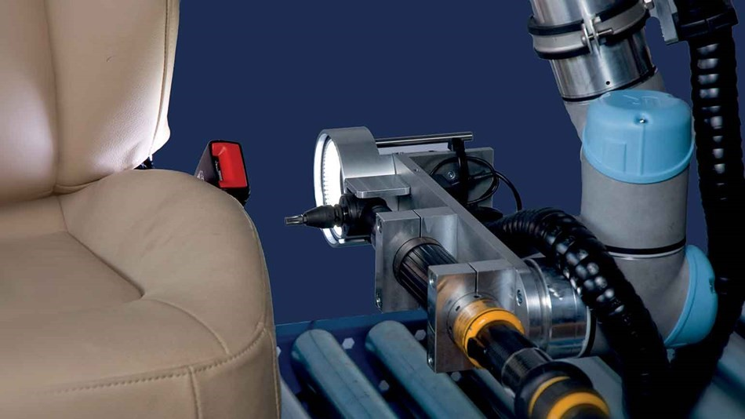

El brazo robótico fácil de programar que ayuda a los empleados
- LA VERSIÓN CORTA
- Lear Corporation, proveedor a escala mundial en el sector automovilístico, ha optimizado el montaje just-in-time (JIT) mediante la integración de nuestros robots en su línea de producción. El brazo robótico realiza al día alrededor de 8500 operaciones de atornillado en los asientos y supervisa digitalmente el proceso para evitar que los asientos defectuosos continúen en la cinta transportadora. El resultado es un aumento tanto en la velocidad de la producción como en la fiabilidad del producto.
- EL RETO
- SEl montaje JIT es el modelo de producción establecido en la empresa del proveedor, lo que supone un ahorro considerable de costes por parte del cliente. Para el proveedor automovilístico Lear Corporation, el modelo requiere una alta flexibilidad y, con tan poco espacio disponible dentro de la nave de producción, se estaba volviendo cada vez más difícil satisfacer la demanda. Lo que Lear Corporation necesitaba era un pequeño robot portátil que pudiera trabajar codo con codo con la plantilla sin resguardos de seguridad de forma que el resto de fases de producción tuvieran lugar una tras otra en la cinta transportadora. El robot en cuestión también debía ser fácil de programar para las personas con poca experiencia en tecnología robótica.
- LA SOLUCIÓN
- En primer lugar, introducir la tecnología de Universal Robots en la línea de producción significaba que no sería necesaria la ampliación del área de producción. El pequeño UR5 trabaja fácilmente dentro de las limitaciones de espacio e incluso ayuda a prevenir errores.
El brazo robótico es responsable de atornillar los asientos del automóvil al resto de la carrocería con un destornillador que posee al final del brazo, realizando alrededor de 8500 operaciones al día. Los asientos están equipados con un transpondedor que contiene los datos individuales de identificación. Tan pronto como el robot recibe el asiento, se procede a la lectura del transpondedor y el robot aprieta los tornillos en ambos lados del asiento. Si un asiento ha perdido los tornillos, el robot descarta este producto y emite una señal de aviso.
Gracias a la intuitiva interfaz de usuario del UR5, cualquier empleado puede programar el brazo robótico a través de una secuencia de comandos en la pantalla o, simplemente, agarrando el brazo para trazar la serie de movimientos que se desea que memorice